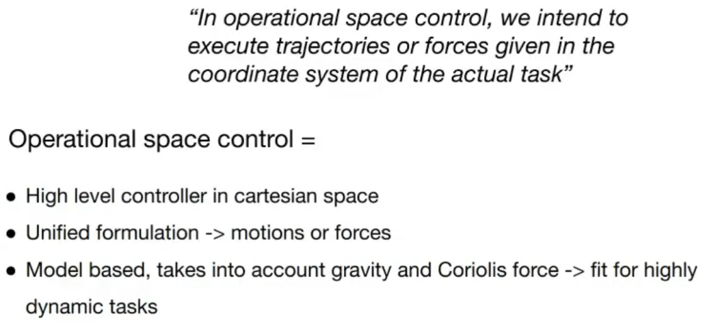
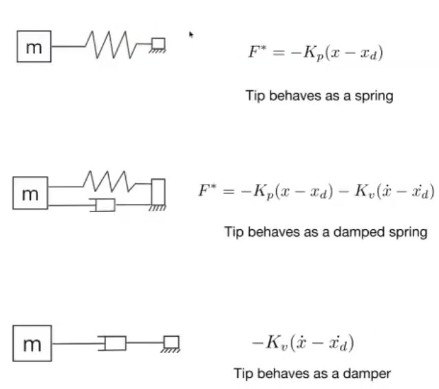
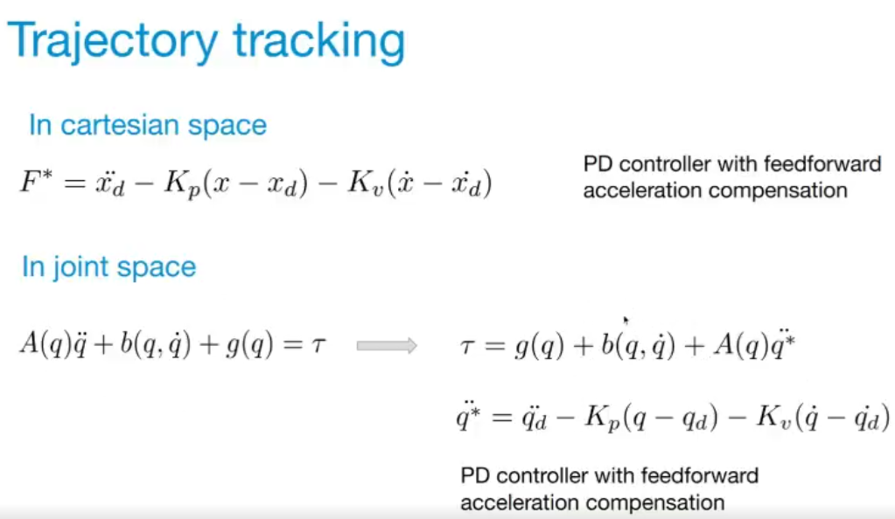
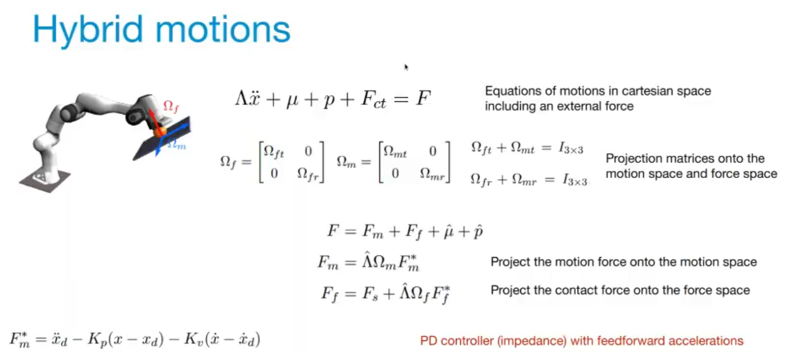
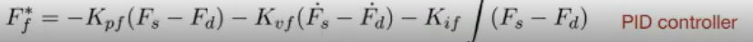
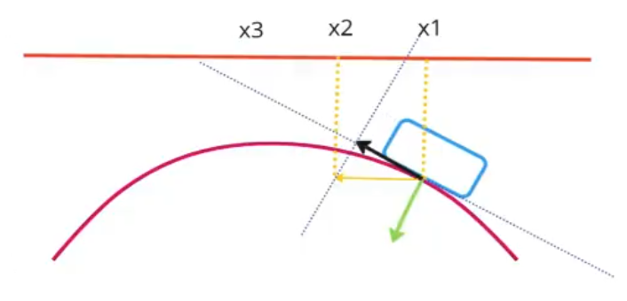
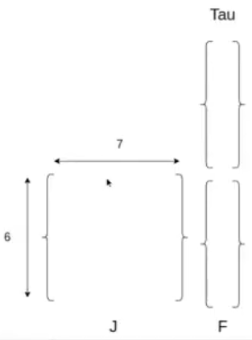
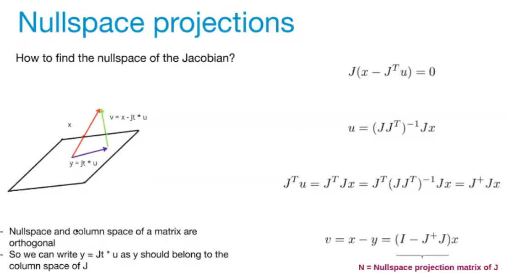
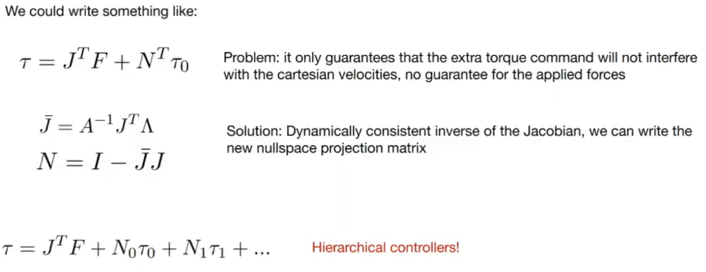
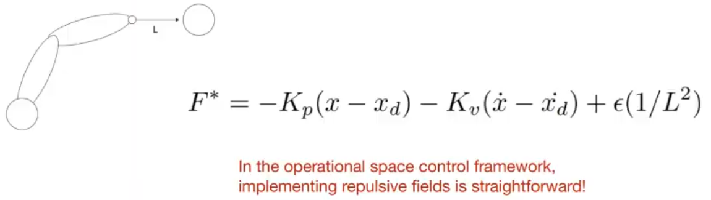

For a humanoid, it is possible to use RT and plan a very long trajectory. This would take a long time and it would unreliable since there would be external perturbation forces acting on the robot. Having no control loop would be deterimental.
Boston dynamics plans a trajectory for the bot's COM. In addition, there are planned footsteps as well. The aim is to control the positions of the COM and the footsteps in cartesian space at some instant of time.
Another example is of a humanoid lifting a box - the controller needs to maintain/control the COG of the box and the robot whilst respecting the contraint on the feet so that friction is still used to keep the bot standing upright.
Everything is in cartesian space.
There are multiple tasks: primary one being stay upright, secondary is to lift a box with a predefined trajectory and apply some force to it.
Iiwa polishing a surface - the motion trajectory and the force (z axis) is in cartesian space. The force is not estimated in the joint space.
Definition

Hierarchical control via nullspace projections.
Comparison of traiditional vs osc. A traiditional controller will not care about gravity, centrifugal or coriolis forces or what configuration an arm is in (fully extended with 80kg on it will not change how the controller behaves).
OSC is a model based controller. The PID controller at the lower level has very efficient gains since it doesn't need to worry about fighting gravity and other dynamic forces etc.
Theory
EOM for a manipulator arm that links the torque applied at the joints and the joint accelerations. It's obtained using Legrangian equations. It is very similar to Newton's equation $F=ma$, but in the joint space.
$$
A(q)\ddot{q} + b(q, \dot{q}) + g(q) = \tau
$$
OSC expresses everything in cartesian space, at the point of interest of the robot. The above equation is transformed to a frame at the tip of the robot in the task space. The force applied at the tip of the ee is related to the acceleration at the tip.
$$\begin{equation}
\Lambda \ddot{x} + \mu + p = F \label{eq:totalForce}
\end{equation}$$
$$\begin{array}{ccl}
\Lambda &:& \text{mass/inertia at a specific point (here, at the tip).} \\
&& \text{The mass, inertia of the whole robot is represented at that point.} \\
mu &:& \text{Coriolis and centrifugal (centripetal?) forces} \\
p &:& \text{Gravity} \\
F &:& \text{Desired force to be applied to the world.}
\end{array}$$
Choose the force at the tip such that it cancels the coriolis, centrifugal and gravity forces.
$$
F = \hat\Lambda F^* + \mu + p
$$
$$\begin{array}{ccl}
F^* &:& \text{Star represents the desired force.}
\end{array}$$
Substituting this into \ref{eq:totalForce}, the equation becomes:
$$
\ddot{x} = I F^*
$$
The system (the tip of the robot) behaves as a unit mass. This is called dynamic decoupling.
To get the torque to be applied to the robot at every controller cycle:
$$
\tau = J^T F
$$
Applying for example $F^* = -9.8$ in the z direction, it would make the tip of the ee (a unit mass) fall/accelerate toward the ground.
Different configurations

In the above figure, the desired position is always the original resting position. In the spring case, there's a slight oscillation. The damped spring case looks very similar to an impedance controller or PD control.
The damper case applies corrective action on the velocity. It is called floating joints. The arm does not return back to its original position since it's velocity control.
Trajectory tracking
OSC is a unified motion-forces approach. The above only discusses the force component, i.e. how the tip of the arm should behave. But, it is very similar - the damped spring method (impedance control) is used to track trajectories.

$\ddot{x}_d$ is added to the equation which is called PD controller with feedforward acceleration compensation.
In joint space, the same is done. The torque applied would cancel out gravity, coriolis and centripetal terms and the controller ends up directly controlling for the desired acceleration $\ddot{q}^*$. PD control with acceleration ff compensation can be added to this.
This controller only works well if the modeling of the arm is perfect.
Hybrid motions
E.g., arm polishing a surface. The arm is moving between various desired positions but also applying a desired force in a different direction. OSC allows division of motion and spaces in different directions easily.


Starting with the same EOMs, $F_{ct}$ is added, which represents the force exerted by the plane onto the EE. There are now 2 spaces/planes - one in which the robot does motion and the other in which the bot moves.
$\Omega_m$ and $\Omega_f$ are the 2 projection matrices, orthogonal to each other, projecting into these spaces.
There are now 2 forces in the equation $F_m, F_f$ which, the desire is, to not interact with each other. The force component shouldn't interfere with the motion and vice-versa. To achieve this, each of the forces is projected into their own space ($F^*$ to $F$). After projection, the robot can move and apply forces at the same time. The applied forces would be the $F^*$ ones.

Consider a set of trajectory waypoints $x_1, x_2, x_3$ on a single plane. It is intentionally not defined on the curved surface. The aim is to apply a certain amount of force in the green direction (-z) but also move between the waypoints in cartesian space.
If force is simply applied along the orange axis, it would interfere (shown using the yellow arrow) with the force in the green direction. Instead, the force is projected (using the projection matrices) into the space of motion (the dotted line). It is made sure that the 2 projected forces (dotted lines) are always orthogonal.
Nullspace projections
If an arm has more DOFs (joints) than the DOFs of the EE, then there is some redundancy. It is then possible to move some joints without affecting the task of holding a cup.
It is not about having 1 extra joint means that the arm can move about the extra joint freely. But, it's about moving all the joints in such a way so as not to affect the task. Doing this is referred to as moving in the nullspace of the jacobian.

The aim is to find a control task that ensures stability for the joints not used by the main control task. But, how is it possible to ensure this additional control taks will not interfere with the main task?
With redundancies, if the nullspace isn't taken care of, the controller can behave wildly - instabilities, vibrations with the joints. If a secondary task is not explicitly defined for the joints, then the behaviour of the robot is not fully defined. There is a necessity to define a secondary task for botst that have redundancies.
The null space of a matrix ($J$, the jacobian in this case) is the set of vectors that when multiplied with the matrix, gives 0. Nullspace of $J$ is the set of torque vectors such that the resulting force applied at the tip is 0.
Consider a set of torque vector commands $\tau$, which when multiplied by the jacobian gives no forces in the cartesian space at the tip which is the aim. The desired force at the tip is the primary task. The $\tau$ commands also allow doing something else such that nothing is modified at the tip.
Nullspace computation

For a given matrix, there are 2 important spaces: Nullspace and its counterpart called column space, which is the linear combination of the column matrix. The important point is that these 2 spaces are orthogonal.
Consider a vector x (orange arrow). It's null and column space would be given by the green and purple vectors respectively. The aim is to find $v$.
If the vector to find belongs to the null space, then:
$$\begin{align*}
J(x - y) &= 0 \\
J(x - J^T u) &= 0 \\
\end{align*}$$
$J^+$ is the pseudo-inverse of J, since it's not possible to find the inverse of $J$ since $J$ is not square.
In the end equation, $N$ is called the nullspace projection matrix of $J$, since multiplying it with $x$ (or any other vector), leads to a (or the?) vector in the null space of $J$.
The jacobian is the matrix that relates the joint velocities to the cartesian velocities at the tip. Multiplying some torque vector with the jacobian that leads to not disturbing the behaviour of the tip, is a good thing and is the aim.

$$
\tau = J^T F + N^T \tau_0
$$
$$\begin{array}{ccl}
\tau &:& \text{Control vector} \\
F &:& \text{Desired force. Could be impedance control etc.} \\
N^T \tau_0 &:& \text{Additional torque command} \\
N &:& \text{Null space matrix}
\end{array}$$
Since the Jacobian relates velocities, projecting $\tau_0$ into the nullspace only guarantees that the secondary task will not interfere with the velocities in the cartesian space. But, does not provide that guarantee with the accelerations.
There is another matrix called dynamically consistent inverse of the jacobian that will ensure that the secondary task will not affect the accelerations of the primary task.
It is possible to have a hierarchy of controllers. E.g., it is possible to have a secondary task $\tau_0$ not interfere with the primary. Then using the null space of the null space of the primary task another controller $\tau_1$ can be created and so on. Every successive controller will have torques that are more limited and less important. This is perfect for humanoids where there is a lot of redundancies.
Virtual repulsive potential field

If there is an object in the environment which the arm needs to avoid/not collide with, it is possible to write a controller such that the object is repulsing the robot, like a magnetic field repulsing the tip of the EE.
This would be easy to achieve using the OSC framework by adding an extra term to the desired force that is the inverse of the distance between the tip and the collision object.
Limitations
1st point
Torque controlled robots are limited. It's not something that would be done when needing to deploy 100s of robots.
For example if inertia isn't modeled correctly.
For e.g., with the iiwa, calibration is done often to get an updated model of the arm.
It is not possible to change the stiffness on the fly when moving from unconstrained to constrained spaces, for e.g.. It would lead to instability issues (vibrations). The robot would have to switch from one controller to the other when stopped. Ideally, it's desirable to have just 1 controller. But, practically this isn't possible.